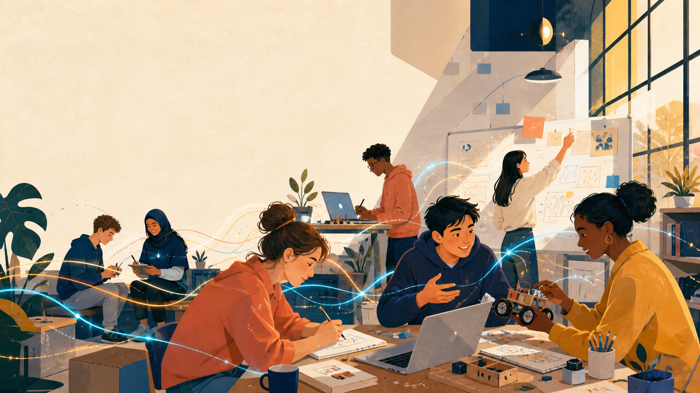

ATLS 4519 · First class
Learn,
Vibe,
Build.
A studio course about building real things with AI.
I’m Aaron G Neyer
Recent ATLAS Masters Graduate
Long time software developer.
Local builder of technology & community.
Where this class comes from
What does it mean to be a builder now?
What is the future of programming?
The class
Quick pulse
Who is in the room?
✋I have coded without AI.
✋I feel like a complete novice.
✋AI helped me become a builder.
The three C’s
This is a class about computers.
It’s also a class about cognition, communication, and creativity.
01 · Cognition
AI can help us think.
But if we aren’t careful, we’ll forget to think for ourselves.
C
02 · Communication
AI works better if we can articulate ourselves clearly.
Writing and talking well, both to machines and to humans, are more important skills than ever.
C
03 · Creativity
Human creativity is and will be a key source for novelty.
Stay inspired.
C
Why I am teaching this
How I got here.
Computer scienceCase Western · startups
Stepping awaygrief · travel · discovery
Returningcontracting · CTO
Human systemsNaropa · ecopsychology
Bridging worldsGoogle · community
Building nowATLAS · Parachute · agents
You can leave tech, come back, and change what it means to you. I did.
Your turn
2–3 min
Introduce yourself.
Name + what you are studying
Your experience with AI
Something you want to learn
Something you want to make possible
While other people talk, listen. Don’t spend the time rehearsing yours.
10-minute break
Stretch. Talk to someone whose path surprised you.
Welcome back
2–3 min
Intros, continued.
Name + what you are studying
Your experience with AI
Something you want to learn
Something you want to make possible
Demo
Watch me build something.
Live build
From a blank folder to something working, narrated.
→
My setup
The agents and systems I actually use every day.
→
Tool tour
A quick look at a few tools worth knowing.
The operating principle
Use AI to augment your thinking, not replace it.
And you stay responsible for what you make and what it does.
How the class works
One artifact. One reflection. One share.
01
Artifact
Make something someone else can try, read, watch, or use. Small and unfinished is fine.
02
Reflection
Write at least one paragraph in your own words: what you did, what changed, what you learned.
03
Studio share
Demo weeks: show whatever you’re working on or stuck on. Off weeks: ask questions, give real feedback.
A failed experiment you can explain beats a polished thing you can’t.
Grading
How grading works.
50%
Weekly homework
Artifact + reflection + studio share.
20%
Attendance & sharing
Attendance, listening, participation, and useful feedback.
30%
Final project + showcase
A culminating artifact, showcase demo, and reflection.
Grades track whether the work happened. Feedback is where we talk about where it could go.
Attendance + communication
If you need to miss a class.
Two passes
No documentation and no explanation required.
Life happens
Communicate before class or as soon as you reasonably can.
Stay connected
Do a make-up share or contribution and you get the credit back.
Sick? Stay home and ask to join by Zoom. Accommodations and religious observances never use up a pass.
Tools
Use whatever tools serve the work.
Your pick.
ChatGPT + Codex, Claude, Gemini, Grok, local models, creative tools, paper, cameras, physical materials.
Where we’ll start.
ChatGPT Edu is free with your CU login. In week 2 we’ll claim the $100 Codex student credits together in class.
Week one · Intention baseline
Three paragraphs.
No separate artifact yet.
1. My relationship with AI right now: how I use it, how it has changed, how it has affected me. Plus what I already know how to make.
2. What do I want to become capable of, and why does it matter to me?
3. What might I make, and what obstacles or support can I already see?
Due Sunday, August 30, 11:59 PM in Canvas. Write more if you have more to say. AI can ask you questions, but the writing should be yours.
Next Monday
Live studio time.
We’ll build things together in class — everyone gets space to build live and to share.
How this evolves
We’ll build the structure of this class together.
You bring
intentions, artifacts, questions, failures, feedback
I bring
workflows, guests, structure, challenges, support
We build
a class that fits the people actually in it
This week
For Sunday:
three honest paragraphs.
You don’t need to know what you’re doing yet. Nobody entirely does.
Learn, Vibe, Build
Make something.
Show your work.
See you next Monday.